Browser
|
| Browser
Perspective |
Standard
Smalltalk Browser Perspective.
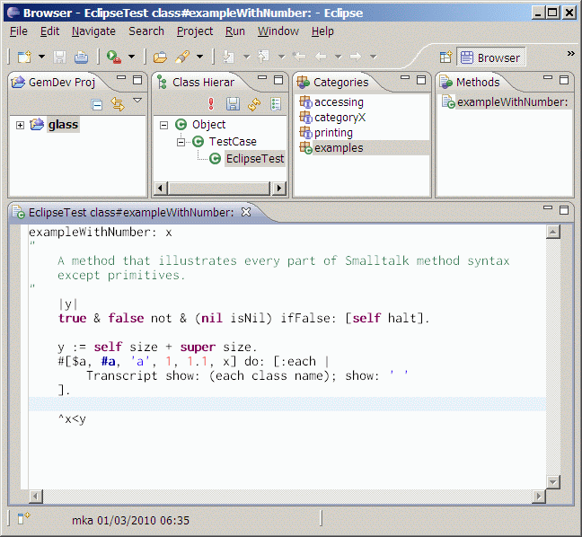
|
Editor
|
| Hyper
linking |
Hyper links
works
for classes (focuses Browser on selected class and its
hierarchy) and messages (offers all implementors and opens selected
one).
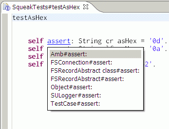
|
|
| Mark
occurrences |
Mark occurrences
works in syntactically valid methods.
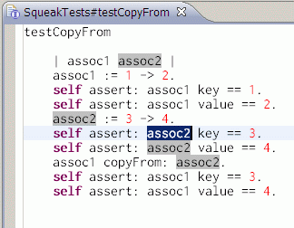
|
|
| Brackets
highlighting |
Automatic
highlighting of [], (), {}
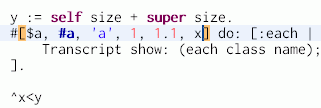
|
|
| Errors/Warnings
highlighting |
Editor can check
and display various problems on the fly.
Syntax errors:
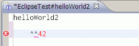
Unused or undefined local variables:
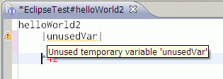
Unimplemented messages:
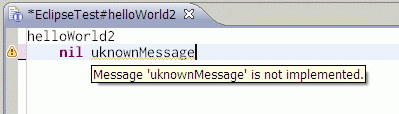
All checks can be enabled/disabled in Preferences >
Errors/Warnings
|
|
| Syntax
Coloring |
Customizable
coloring of Smalltalk Syntax elements (configurable in Preferences
> GemDev > Syntax Coloring).
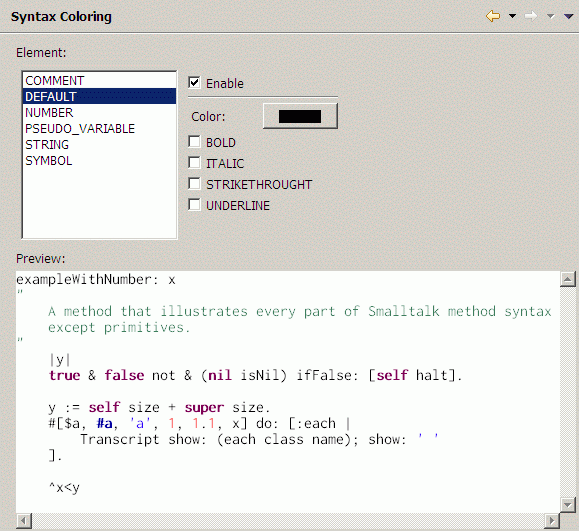
|
|
| Local
Rename Refactoring |
Possible to
rename local variables (ALT+SHIFT+R)
in syntactically valid methods.
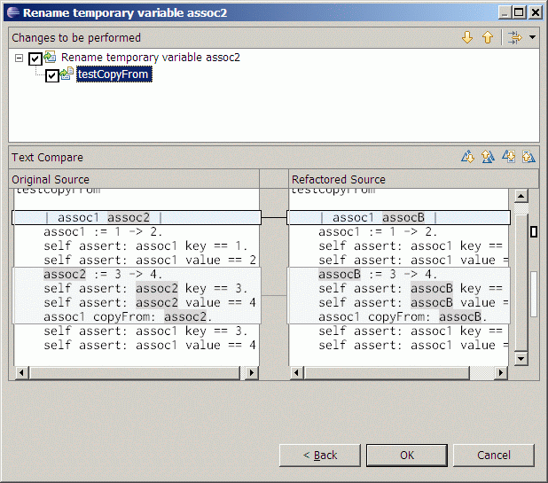
|
|
| Local
History |
History of
edited GemStone methods stored locally in workspace.
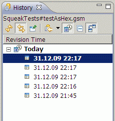 |
Inspector
|
| Inspector |
Inspector view
with explorer-like structure, evaluation pane and Find Object by Oop
shortcut action.

|
Search
|
| Find
Class/Implementors/Senders |
Fast access
to classes (CTRL+SHIFT+T),
Implementors (CTRL+SHIFT+I)
and Senders (CTRL+SHIFT+J)
with name matching.
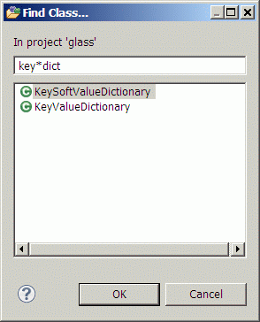
|
|
| Text
search |
Find methods
containing particular text in source code (Search > File... >
GemDev Text Search). Case sensitive and case insensitive
search supported.
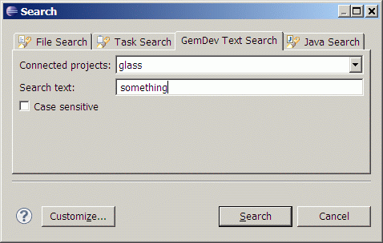
|
|
| Search
results in class tree |
Search results
can be presented as list of methods or as method tree.
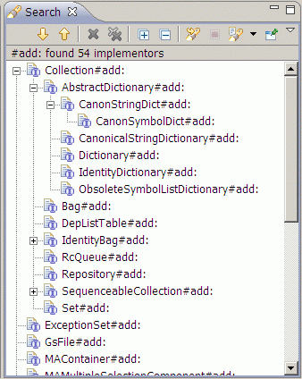
|
|
| Find
implementors/senders shortcuts |
Search can be
triggered from Browser method selection, from method or
workspace editor with selected element (default shortcuts are CTRL+G / CTRL+SHIFT+G) |
Subversion
|
| Working
Copy <-> GemStone read/write |
Support of
reading/writing of methods/categories from/to Working Copy together
with Subclipse gives basic (highly experimental) support for Subversion.
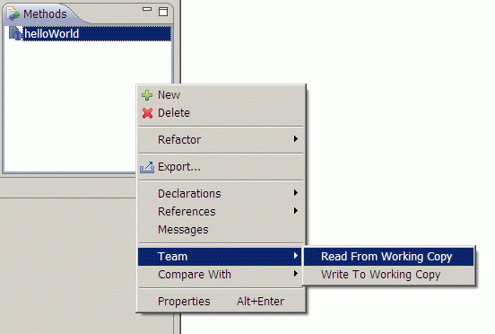
|
|
| Working
Copy <-> GemStone graphical compare |
It is possible
to compare class (or class hierarchy) with current working
copy,
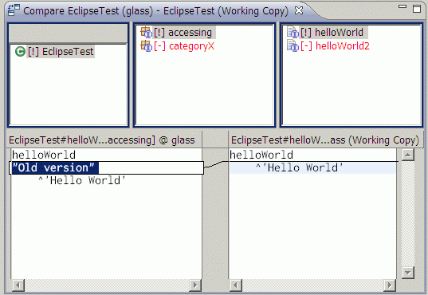
|
|